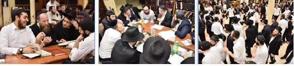

מימין לשמאל: ריקודי חודש אדר סוערים, שיעור חסידות לאנ”ש, ותלמידים לומדים עם הרב
שבוע שמח באמת נפתח בבית חיינו, עם כניסתנו לחודש השמחה הריקודים וההתוועדויות - חודש אדר. בבית חיינו לא צריכים אף פעם סיבה מיוחדת בשביל לשמוח.

שבוע שמח באמת נפתח בבית חיינו, עם כניסתנו לחודש השמחה הריקודים וההתוועדויות - חודש אדר. בבית חיינו לא צריכים אף פעם סיבה מיוחדת בשביל לשמוח.
עצם השהות יחד עם הרבי שליט”א מלך המשיח, מהווה סיבה מספקת לשמחה עצומה לכל יהודי. במיוחד כשמתווספת סיבה כזו מיוחדת - השמחה גוברת פי כמה וכמה…
“משנכנס אדר - מרבין בשמחה”, וכאן בבית חיינו ‘זריזין מקדימין’. שירת ה’יחי’ כהכנה לכניסתו של הרבי שליט”א מלך המשיח לתפילות, מושרת במנגינת ‘ויהי בימי אחשוורוש’, ומבטאת את הכניסה לחודש השמחה באופן ‘רשמי’.
אחרי תפילת מנחה במניין כ”ק אדמו”ר מלך המשיח שליט”א, מתיישבים התמימים לשיעור הדבר מלכות הקבוע כמדי יום.
יחד לומדים את שיחת הדבר מלכות לפרשת תרומה, המבארת את הקשר הפנימי והנצחי של כל יהודי עם הקב”ה, המתבטא בכך שמהותו היא ‘זהב’, ולכן כל יהודי הוא עשיר, ואת החיוב שמוטל על דורנו לבנות את בית המקדש השלישי בפשטות ממש.
בשעה 10:00 מפונים הספסלים והבימה בקדמת 770, ונוצרת רחבת ריקודים גדולה. ההוספה בשמחה מידי יום הינה הוראה מפורשת של הרבי שליט”א בדבר מלכות, אולם ב–770 ניתן לראות את ההוראה לא רק שחור על גבי לבן בספר, אלא בעיקר במוחש על פניהם של הרוקדים.
כל יום נוסף של ריקודים לא מהווה עוד אתגר או מאמץ, אלא מגדיל ומלבה את השמחה הגדולה. שמחה טבעית על היותנו ‘זהב’ - יהודים, חסידים, בניו הנבחרים של הרבי השוהים בצלו בשנת הקבוצה.
יום שני, בדר”ח אדר
תפילת שחרית בימים אלו מתקיימת בחיות מיוחדת, עם אמירת ההלל מתוך שמחה עצומה, ומלווה בניגונים רבים.
סדר לקוטי שיחות רבתי מתקיים כמדי שבוע בקדמת 770, בהשתתפות תמימים רבים בוגרי כלל הישיבות שיושבים ועוסקים יחדיו בתורתו של משיח על פרשת השבוע. למשתתפים מחולק כיבוד מיוחד, ולסיום נערכות ההגרלות כמיטב המסורת.
הכרזת ה’יחי’ בסיומו של הסדר, מהווה יריית הפתיחה לריקודים הסוערים בניצוחם של התמימים יצחק שי’ ליובאשווסקי וראובן שי’ טימסית, שמתקיימים היום בהוספה וביתר שאת. הריקודים מהווים גם חגיגה והודיה לרגל ‘דידן נצח’ במשפט שהתנהל כנגד א’ מאחינו התמימים.
עם סיום הריקודים, מתיישבים התמימים לסעודת ההודיה שמתקיימת בהתוועדות השבועית הקבועה בפינה הצפונית מזרחית. עם התמימים מתוועדים הרה”ח יהודה פרידמן והרה”ח שלמה זלמן לנדא, וההתוועדות נמשכת שעות ארוכות, כשהמשקה נשפך כמים.
יום שלישי, ב’ אדר
אחרי תפילת שחרית במניין כ”ק אדמו”ר שליט”א מלך המשיח, מתקיימת במזרח 770 התוועדות לרגל הנחת תפילין של הת’ אהרן לייב שי’ מוניץ. התמימים אומרים איתו ‘לחיים’ ומאחלים לו שיזכה להיות חייל נאמן בצבאו של מלך המשיח - חיילי בית דוד.
אחרי ריקודי השמחה של חודש אדר, מתקיימת במרכז 770 התוועדות חסידית בקשר עם חגיגת סיום הלכות תרומות והתחלת הלכות מעשרות ברמב”ם, בארגון הרה”ח מנחם נחום שי’ גערליצקי.
יום רביעי, ג’ אדר
אחרי תפילת שחרית במניין כ”ק אדמו”ר מלך המשיח שליט”א, מתקיימות התוועדויות בר מצוה לשני תמימים שנכנסים היום בעול המצוות, והגיעו לחגוג את יומם הגדול במחיצתו של נשיא הדור, ובמקביל מתקיימת חגיגת ‘אפשערניש’ לבנו של אחד מאנ”ש בשכונה. התמימים אומרים ‘לחיים’ ומברכים את בעלי השמחות, שמשמחתם הפרטית נזכה לעבור לשמחת הגאולה האמתית והשלימה.
יום חמישי, ד’ אדר
שיעור גאולה ומשיח העיוני, מתקיים כמדי יום חמישי לאחר הסדרים, במזרח 770. מוסר השיעור השבוע - הת’ יוחאי דניאל, מדבר אודות תענית אסתר בגאולה. הוא דן האם יצומו בה לע”ל או לא, ומבאר באריכות את כל הצדדים ומקורותיהם בדברי הרבי שליט”א מלך המשיח.
בשעה 10:30 מתמלאת רחבת הריקודים בתמימים ואנ”ש, וריקודי חודש אדר שמחים פורצים בסערה. לכבוד ‘ליל שישי’ הריקודים מתארכים, וקרוב לשעתיים מעגלי ריקודים ממלאים את 770.
אחרי סיום הריקודים מתיישבים תלמידי התמימים דקבוצה ע”ז להתוועדות אחדות השבועית, שנערכת במערב 770. שבוע חלף, ושוב אנו יושבים יחד ומתוועדים מתוך שמחה עצומה על הזכות הנפלאה לה זכינו - לשהות ב’קבוצה’ שנה תמימה עם מלך המשיח.
כמו כן, בפינה הצפונית מזרחית מתקיימת התוועדות חסידית לרגל הבר מצווה של הת’ אברהם צבי מיידנצ’יק, בארגון מכון ‘בר מצווה אצל הרבי’. זאת בנוסף להתוועדויות קטנות נוספות המתקיימות ברחבי 770, כמידי ליל שישי, בשבת אחים גם יחד של תלמידי התמימים.
יום שישי, ה’ אדר
בתפילת שחרית במניין כ”ק אדמו”ר מלך המשיח שליט”א, ניגש כש”ץ הרה”ח רחמים לדיוב, לרגל יארצייט על אמו. לאחר התפילה הוא מזמין את התמימים ואנ”ש לאמירת ‘לחיים’ לעילוי נשמתה.
במזרח 770 מתקיימת התוועדות חסידית לרגל בר מצווה לת’ אברהם צבי מיידנצ’יק, והנחת תפילין לת’ מנחם מענדל אטלן. כמו כן, מתקיים במרכז 770 מעמד ‘אפשערניש’ לבנו של הרה”ח שניאור זלמן ליברוב.
התמימים ‘חוטפים’ אמירת ‘לחיים’ קצרה, ופונים לצאת בזריזות למבצע תפילין בחיות ובשטורעם לקבלת פני משיח צדקנו, מתוך שמחה גדולה - כמתאים לימי חודש אדר, וכמוזכר בדבר מלכות השבועי שעל ידי קיום מצות תפילין זוכים לשמחה מעין שמחת הגאולה.
ליל ש”ק פרשת תרומה, ו’ אדר
לקראת כניסת השבת מופץ ב–770 הקובץ השבועי המרתק מבית ועד ‘חיילי בית דוד’, תחת השם ‘גואל ראשון’, הכולל שיחות ומכתבים אודות תפקידו ועניינו של משה רבינו - לרגל יום הולדתו שחל בז’ באדר - ואודות ההתפשטות שלו שבכל דור.
לאחר שעה קלה של לימוד החסידות והכנה לתפילה עם הרבי שליט”א, פורצת שירת ה’יחי’ בעוז. לאחר מכן מתחילה התפילה מתוך שמחה גדולה, ולאחר שירת “לכה דודי” במנגינת ‘ויהי בימי אחשוורוש’ - ממשיכים הקהל בשירת ‘יחי’ המהדהדת בעצמה ב–770, ותובעת ללא פשרות את התגלותו המיידית של הרבי שליט”א כמלך המשיח לעין כל.
לאחר תפילת קבלת שבת, מתיישבים תלמידי התמימים לסדר חסידות - כמידי שבת. לאחר מכן ניגשים לבתי אנ”ש, לסעוד את סעודת השבת מתוך התוועדות חסידית.
יום הש”ק פרשת תרומה, ו’ אדר
בשעה 8:00 בבוקר מתמלא 770 בלומדי חסידות. במרכז 770 מתקיים סדר לימוד מיוחד של הדבר מלכות השבועי - משיחות שבוע ושבת פרשת תרומה תשנ”ב, עם כיבוד בשפע עבור המשתתפים.
לאחר התפילה נעמד הקהל בחרדת קודש לשירת ה’יחי’, כהכנה לכניסתו של מלכנו משיחנו להתוועדות הקבועה של יום השבת בשעה 1:30. כולם מתכוננים לשמוע הישר מפי המלך את שיחות קדשו.
משום מה, חולפים הרגעים בזה אחר זה, בעוד החסידים נאלצים להמתין ואיננו שומעים את מלכנו משיחנו. המתנה זו בלתי מובנת כלל וכלל, מעוררת את זעקת ‘עד מתי’ - ומזכירה לנו את זעקתו של אותו חסיד, בהתוועדות שבת זו בשנת תשנ”ב, על כך שכולנו “תובעים וצועקים ובוכים” שיתגלה משיח תיכף ומיד… אך ביתר שאת ניצבת ועומדת תגובתו של הרבי שליט”א, שביקש מיד מרב להכריז שבשבת אסור לבכות, ומיד לאחר מכן החל את ניגון ההקפות ועודד בשתי ידיו בשמחה רבה…
רבים מעיינים בדפי השיחה מאותה התוועדות, ומעמידים מול העיניים בבטחון את הבטחת הרבי שליט”א באותה התוועדות: “ובפרט שהזמן עד ביאת המשיח יהיה קצר יותר, לא חצי שעה, אלא רגעים אחדים, ועד לרגע אחד, ועד שזוכים תיכף ומיד לגאולה האמיתית והשלימה”!
בהמשך להתוועדות קדשו של הרבי שליט”א, נערכות ב–770 בשמחה רבה התוועדויות ה’אופרופעניש’ לחתנים שי’, שיבנו את בית חב”ד שלהם בשבוע הבעל”ט.
מוצאי שבת קודש, ליל ז’ אדר
תפילת מעריב מתחילה בשעה 6:31, ולאחריה נערכת ההבדלה. מיד לאחר מכן יוצאים כולם לערוך את קידוש הלבנה בחצר 770, בציפיה להתחדשות המקבילה של עם ישראל ומלכות בית דוד.
לאחר קידוש לבנה, פוצחים הקהל בריקודים מתוך שמחה וטוב לבב - כאשר שתי הסיבות מצטרפות יחד לשמחה: הן הריקודים של חודש אדר בו “מרבים בשמחה”, והן הריקודים בקשר לקידוש לבנה, לקבלת פני משיח צדקנו.
בעקבות הקור העז והרוחות השוררים בחוץ, ממשיכים הריקודים כעבור כמה דקות בתוך 770. שעת הריקודים מוקדמת מאשר בימים הרגילים, ולכן ההשתתפות בריקודים גדולה מתמיד - נמצאים עוד רבים מאנ”ש, וכן ילדיהם, חיילי צבאות ה’ הבולטים בנוכחותם.
הריקודים מסתיימים בשעה 8:45 והתמימים מתיישבים לסדר נגלה של מוצאי שבת שמהווה את הסדר האחרון (!) במוצאי השבתות של קבוצה תשע”ז, לאור החלפת השעון לשעון הקיץ בשבוע הבא. כמעט לא הרגשנו כיצד חלפה לה תקופה כה ארוכה בקבוצה עם המלך; ומי היה מאמין שכל כך הרבה חודשים בקבוצה ימשכו בצורה אפורה ושגרתית זו, בלי לראות את ההתגלות המושלמת?!…
אחרי הסדר מתקיימת במרכז 770 סעודת מלווה מלכה והתוועדות חסידים רבתי, בקשר עם חגיגת סיום הלכות מעשרות והתחלת הלכות מעשר שני ונטע רבעי ברמב”ם.
כמו כן, בפינה הצפונית מזרחית יושבים התמימים מקבוצה ע”ז, וחוגגים את יום הולדתו של אחינו התמים מנחם מענדל הולצברג.
יחי אדוננו מורנו ורבינו מלך המשיח לעולם ועד!